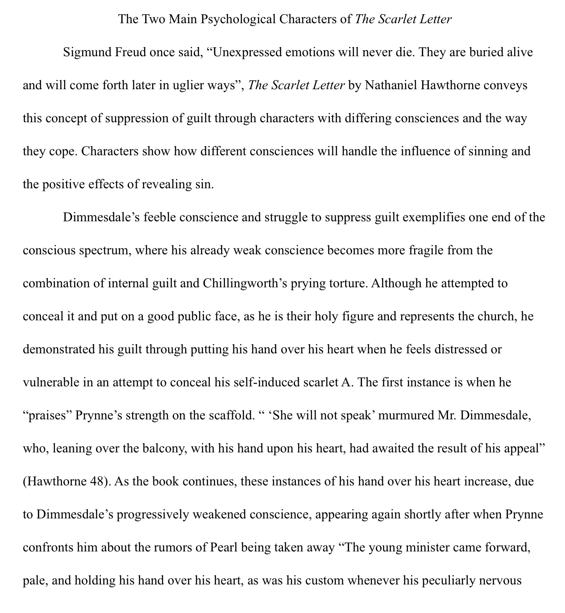
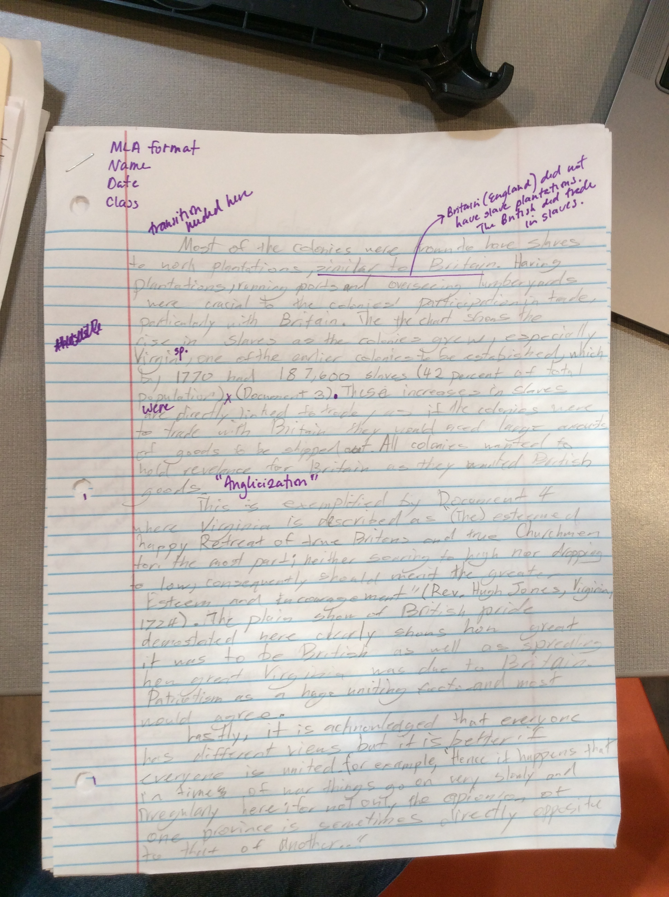
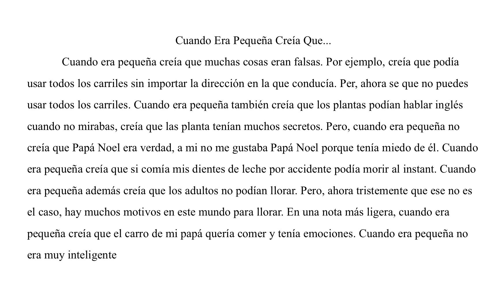
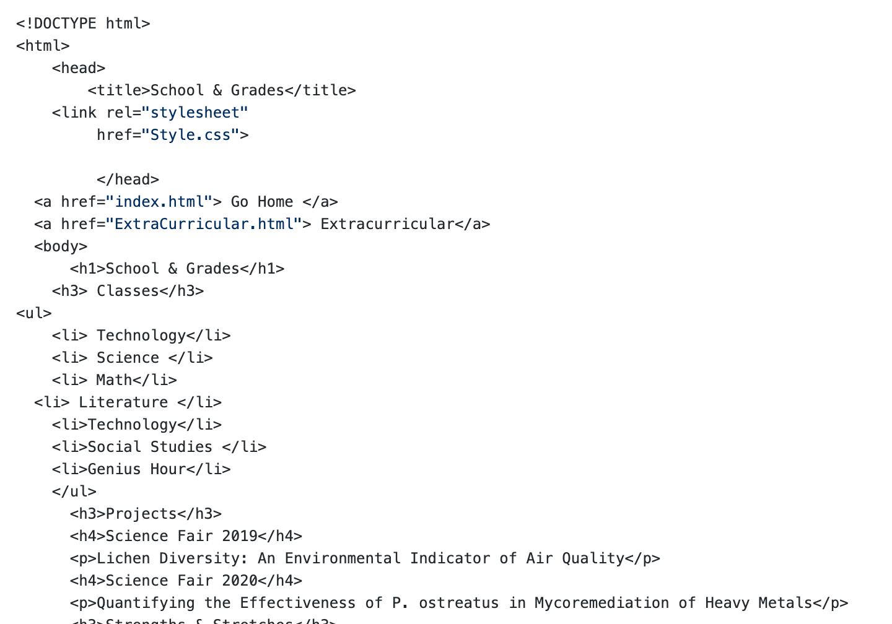

Lichen Diversity: An Environmental Indicator of Air Quality
Quantifying the Effectiveness of P. ostreatus in Mycoremediation of Heavy Metals
I went into this year believing that I was proficient in essay writing. However, essays this year are predominantly research papers, whereas most essays that were assigned last year were creative writing papers. I have learned that I am not as adept at organizing and using sources in research papers. This is a skill that I want to improve upon in the upcoming Hero Essay. Although essay composition is no longer my strength, my ability to organize has aided me this year. I always have the materials I need for every class which has eased stress for me this year. And, with organization pre-existing, I can learn to organize my writing unimpeded by a lack of materials.
This year, much like past years, has included group projects. I have never enjoyed group projects because they stress me out, however this year I am trying to keep a positive attitude in regards to group projects, since I have had many of them. This has forced me to acquire a more positive attitude towards them.
In Humanities, a weekly homework assignment is annotations, in which we are required to provide our own analysis of text. This year I want to improve my ability to provide brief, but indepth, summaries as well as analysis. By the end of the year, I want to be able to add my own connections to my annotatuions
In relation to strength. I have gotten various grades on my essays. However, in Literature I did quite well on my Scarlet Letter Essay (Below). I felt that it is relevant as I would like to produce another essay at this level.
Also in relation to my strength, I have gotten a less than great grade on my Social Studies Essays and want to improve these grades by the end of the year. This essay is one that depicts my unsatisfactory gardes in social studies.
I have done well this year in math, and this math test exemplifies my need to focus on small details as well as what I do well on, including descriptions and memorizing theorems. The test below shows a small computation error, which I do not want to make again.


Este año en la clase de español, estoy mejorando mi escribir, leer, y hablar de Español. Esta actividad es 'Cuando era pequeña creía que...', creo que esta proyecto es un bueno ejemplo de mi mejora de escritura este año.
This year in Spanish, I am improving my writing, reading, and speaking of Spanish. This activity is 'When I was little I believed that...', I believe that this project is a good example of my improved writing this year.
This year in technology our primary project is this website. This is the code I used to make it.
